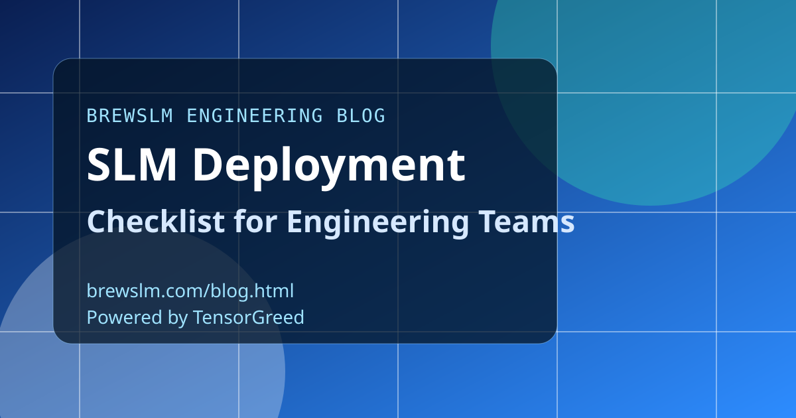

Define target profiles before you train
Start with deployment targets such as vLLM server, edge GPU, or mobile runtime. Lock the runtime constraints up front, including model format, VRAM budget, and maximum latency. This avoids training toward a model profile that cannot be served where your users are.
Validate artifacts and runtime compatibility
Treat export bundles as release artifacts with strict contracts. Validate format compatibility, quantization assumptions, tokenizer parity, and smoke prompt behavior before promotion. A deployable bundle should include enough metadata to replay the exact training and export path.
Roll out with staged health checks
Use staged rollout gates such as canary, synthetic prompt checks, and baseline comparison on key tasks. Require pass criteria for latency, response quality, and runtime stability. If any gate fails, keep the release in staging and capture actionable diagnostics for the next iteration.
Monitor, alert, and rollback with policy
Define SLOs before launch and alert on tail latency, error rate, and quality drift. Pair metric alerts with operational runbooks so on-call engineers can react quickly. A rollback path should be one command and one decision, not a multi-hour incident workflow.